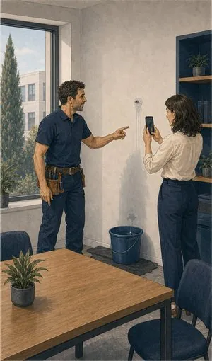
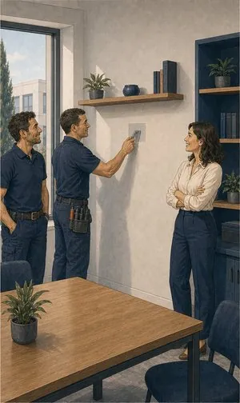

Responsabilidade civil de empresas
Responde pelo prejuízo que a atividade causa a terceiros. É o seguro que evita que um acidente banal acabe em tribunal.
O que pode incluir
Um cliente escorrega.
Quem paga?
Cobre os danos causados a terceiros no exercício da atividade: clientes, fornecedores, vizinhos, transeuntes. Em vários setores é obrigatória por lei: construção, segurança privada, clínicas, advocacia, animação turística, entre outros. Fora desses, é o seguro que mais vezes se descobre em falta no pior momento.
Responsabilidade civil de exploração
Danos causados a terceiros pela atividade normal do negócio: uma queda nas instalações, uma inundação no vizinho, um objeto que cai.
Responsabilidade civil profissional
Prejuízos resultantes de erro técnico no exercício da profissão — projetos, pareceres, atos clínicos, contabilidade.
Responsabilidade civil de produtos
Danos causados por produtos vendidos ou fabricados depois de entregues ao cliente.
Laboração e trabalhos em casa de clientes
Para atividades que operam fora das próprias instalações: instaladores, empreiteiros, técnicos.
Danos a bens de terceiros à guarda
Objetos, veículos ou equipamentos entregues à empresa para reparação, depósito ou transformação.
Defesa jurídica
Custos com a defesa em processos resultantes de um sinistro coberto.


Sem letra pequena
Onde a cobertura
acaba.
Uma leitura geral, para chegar à conversa com ideias claras. Cada apólice tem as suas condições — e lemo-las consigo.
Ver o que está e o que não está coberto lista indicativa
Normalmente coberto
- Danos corporais a terceiros ocorridos nas instalações ou durante a atividade.
- Danos materiais causados a bens de clientes, fornecedores ou vizinhos.
- Custos de defesa em processos decorrentes de sinistro coberto.
- Trabalhos em casa de clientes, quando a cobertura de laboração existe.
- Responsabilidade por produtos, se contratada essa extensão.
Normalmente excluído
- Danos aos próprios trabalhadores — cobertos pelo seguro de acidentes de trabalho.
- Danos aos bens da própria empresa — cobertos pelo multirriscos.
- Incumprimento contratual e penalizações por atraso.
- Multas, coimas e sanções de qualquer natureza.
- Atividades não declaradas na apólice.
- Prejuízos puramente financeiros sem dano material associado, na RC de exploração.
Para quem
Restauração e comércio
Um cliente que escorrega, uma intoxicação alimentar, um toldo que cai. São os sinistros mais frequentes e os mais fáceis de subestimar.
Instaladores e empreiteiros
O risco está em casa do cliente, não nas instalações da empresa. A cobertura de laboração é aqui o essencial, e falta em muitas apólices.
Profissões técnicas
Projetistas, contabilistas, clínicas. Um erro não causa dano físico mas gera prejuízo — e é a responsabilidade civil profissional que responde.
Informação resumida e de caráter geral. As condições que valem são as da informação pré-contratual e contratual do produto proposto.
Quem define coberturas, capitais e exclusões é a companhia. Veja a página oficial do produto e traga-nos as dúvidas.
Perguntas frequentes
O que nos
perguntam ao balcão.
A responsabilidade civil é obrigatória para a minha empresa?
Depende da atividade. É obrigatória em setores definidos por lei, como construção, segurança privada, algumas profissões liberais e atividades de animação turística.
Verificamos o seu CAE junto da lista da ASF e dizemos com clareza se é obrigatório, recomendado ou dispensável.
Já tenho acidentes de trabalho. Não chega?
Não. São coberturas distintas: os acidentes de trabalho respondem por danos aos seus trabalhadores; a responsabilidade civil responde por danos a terceiros. Uma não substitui a outra.
Que capital devo contratar?
Depende da exposição real: número de pessoas que passam pelas instalações, valor dos bens de terceiros à sua guarda, gravidade possível de um erro.
Como a diferença de prémio entre escalões costuma ser pequena, recomendamos quase sempre subir o capital em vez de o cortar.
Cobre danos causados por um funcionário meu?
Sim, desde que ocorridos no exercício das funções e dentro da atividade declarada. Danos dolosos praticados pelo trabalhador estão excluídos.
E se o processo demorar anos?
A cobertura de defesa jurídica suporta os custos ao longo do processo. É por isso que ela conta tanto: os honorários acumulam-se muito antes de haver decisão.
Descubra se é obrigatório
no seu setor.
Ligue e diga o CAE e a atividade concreta. Verificamos a obrigatoriedade e dimensionamos o capital.
Sem compromisso. Não usamos os seus dados para mais nada.